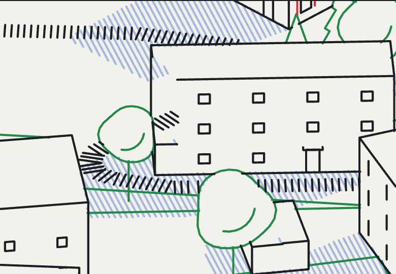
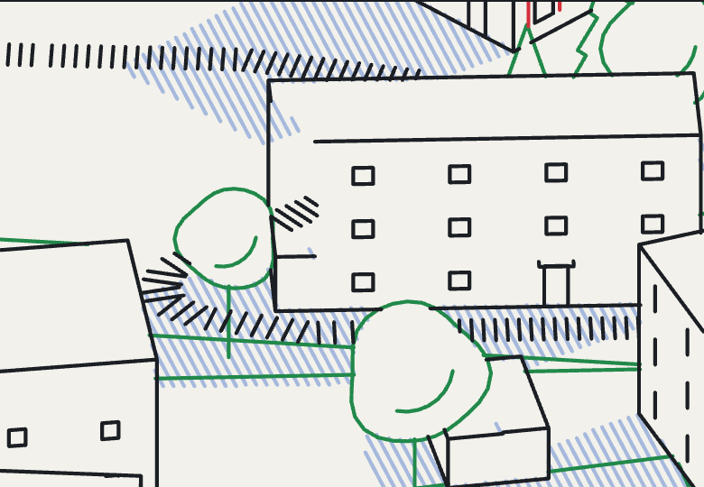
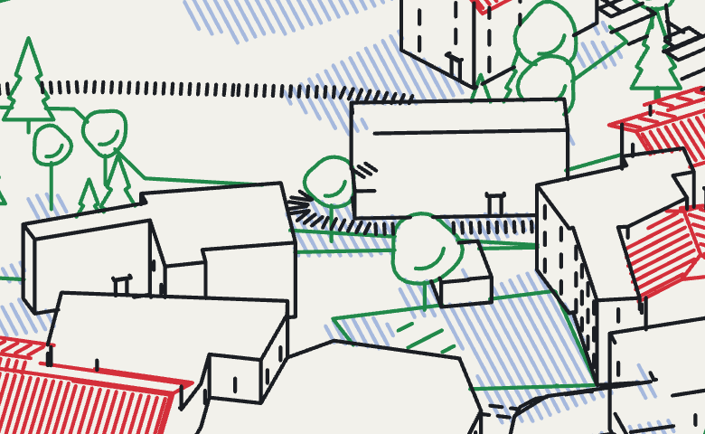

15 November 2026 · Original review · Round 11
Stair treads now allow for their actual projection. A shared pitch along the flight keeps parallel treads apart by at least 0.8 mm at default Detail and pen width, with a floor of two physical pen widths. The most compressed direction determines the pitch, keeping a consistent rhythm through the flight.
When the narrowest projected tread cannot read at the chosen detail and pen width, the whole flight becomes an ordinary dashed path. The texture corridor follows the same decision, so it does not retain a wide stair-shaped gap around the simpler line.



Hallstatt, Mollis and Rye at 1:500 and 1:1000, Detail 1, 0.35 mm pen, optional OSM tags off. Hallstatt shows the largest reduction; Mollis and Rye at 1:500 are unchanged.
| Sheet | Waste before → after | Estimated time change |
|---|---|---|
| Hallstatt 1:500 | 4.5% → 4.5% | -0.23% |
| Hallstatt 1:1000 | 4.9% → 4.8% | -0.84% |
| Mollis 1:500 | 4.0% → 4.0% | +0.00% |
| Mollis 1:1000 | 6.0% → 6.0% | -0.02% |
| Rye 1:500 | 4.4% → 4.4% | +0.00% |
| Rye 1:1000 | 6.2% → 6.1% | -0.08% |
Before lab report · After lab report (local generated files)
Reviewed six changed golden sheets, six LOD sheets and their centre close-ups, and enlarged Hallstatt stair comparisons. Golden differences are confined to path strokes and plot/SVG summaries; other feature totals, counts and census are unchanged. Regression tests check perpendicular tread spacing and visible lengths for regular and broad pens at several orientations, plus matching dashed-path and corridor fallbacks. Build and all 577 tests pass.
No physical proofs were inspected, nor every bend, seed, view or all 29 presets. Spacing is measured perpendicular to parallel treads on each segment; tight switchbacks can still bring marks from separate segments close together. The whole-flight width rule is deliberately conservative: one narrow direction simplifies the entire mapped flight. Shadow crossings and other standing-object overlaps remain separate refinements.